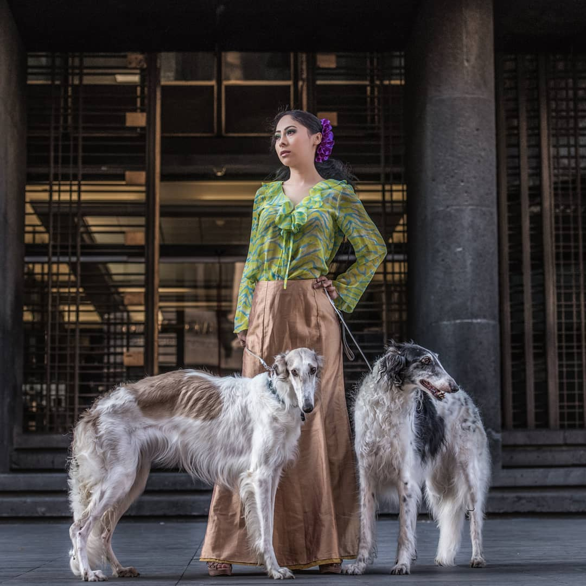

Особенности содержания Русских борзых:
- Щенкам и молодым собакам нельзя подниматься по лестнице
- Тщательно отслеживайте физические нагрузки. Они не должны перенапрягать суставы собаки
- Спальное место должно быть мягким и достаточно большим, чтобы собака могла вытянуться в полный рост
- С собакой надо много и подолгу гулять, а также давать ей возможность свободно побегать
- Собаку не нужно часто мыть, однако необходимо регулярно вычесывать